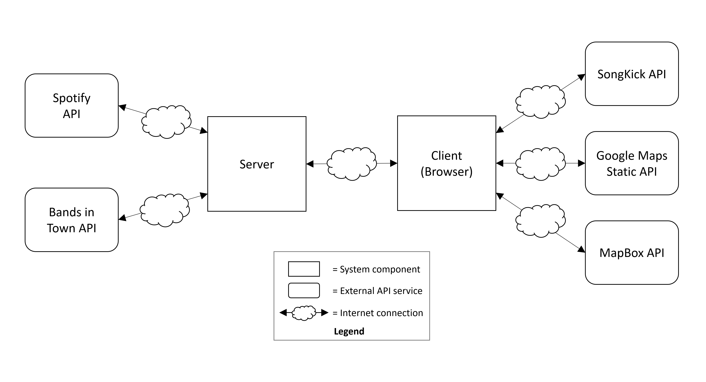

To answer these and many more questions that you might have when it comes to your personal data, we offer you full insight into our data flows and wrote the following piece for clarification on our privacy mechanisms.
To take users' privacy into account from beginning to end of the service development process and provide privacy-friendly technology services to end-users, the concept privacy by design (PbD) was developed (3, 4). PbD was introduced by privacy expert Ann Cavoukian in 2009, who first pointed out the importance of managing user data in a privacy-centered way, especially in our age and time, full of ubiquitous technology, complex services and rapid knowledge creation (1).
Cavoukian developed fundamental principles to guide design-thinking during the development of new technologies in terms of awareness and freedom of decision making around personal data. These principles were created to help organizations and developers like us to incorporate privacy by default and stimulate the pro-active implementation and prioritization of user privacy on a global scale and also form an integral part of the General Data Privacy Regulation (GDPR) (1, 2, 5). To ensure a successful privacy design, we want to communicate our commitment to data privacy with you, our user community and actively share our improvements over time. We start doing this by discussing the following points in more details:
Security and privacy go hand in hand as the personal data protection is dependent on the security measures in place. The data life cycle and its security protocols have to be documented at every stage in the process to promote the data confidentiality and integrity throughout the development and maintenance phases of the service (1). Another security aspect is to anticipate technological developments into the security protocol by e.g. encrypting all transmission channels and separating the data that is offered by an external API such as Spotify from the internal database (3).
To make sure that your data won’t be read or accessed by other third-party providers, we use the Spotify OAuth 2.0 authentication and thus are not able to access your log-in credentials. This means that the log-in credentials will always stay on the Spotify servers. Furthermore, through the HTTPS encryption we can thus ensure that all of the data that you enter on our website will stay encrypted such as “City: Berlin” and cannot be decrypted by third-parties.
The only personal data that is currently visible in the Endpoint-URL is your Spotify token, however, this is only visible in the request URL within your browser during your session. While the token is also used in API calls to our server for the duration of the session, we can only use it to access your top artists and tracks, we are not able to access or change any settings in your account. The token that you generated by logging in with your Spotify account expires after one hour and is thus not valid anymore after this period of time has passed.
To ensure privacy by default, Fair Information Practices (FIPs) such as the purpose specification, collection limitation, data minimization and use limitation are suggested to ensure transparent use of data, avoid unnecessary data collection, increase data anonymity and encourage the destruction of personal data after its use has been fulfilled, respectively (1).
We minimize the storage and usage of your data by providing a session-based service that eliminates the user data every time a user closes the session. This means that we do not keep any Spotify-related data on our servers. Apart from limiting the use and collection of your data while still having a fully functional personalized concert recommendation service, we also specify the purpose of using your Spotify data in the data flow below.
How do I know where my data is stored throughout the gigscovery user journey? User privacy is related to the trust that you as a community have in our service. This trust is based on the accountability that we take for our service and we communicate this through the visibility and transparency of our data flow to foster trustful, open and compliant privacy mechanisms (1).

The final principle addresses the respect for user data and highlights the importance of user-freedom in regards to user settings. To ensure the management of privacy settings by users, an accurate, accessible and compliant representation of personal data in the service is required. Service companies require their users to sign a data consent form, which should be transparent enough to help users understand which data they are agreeing to share with the company (1). This can be implemented through initial privacy functions during the development of services.
We thus ensure full transparency and privacy to you, our users, through the removal of your data from our servers with the end of every session, by default.
With this privacy statement, we hope to inform you about our privacy by design model and are proud to present our gigscovery service to you. We advise you to always consult the latest version of our privacy by design statement.